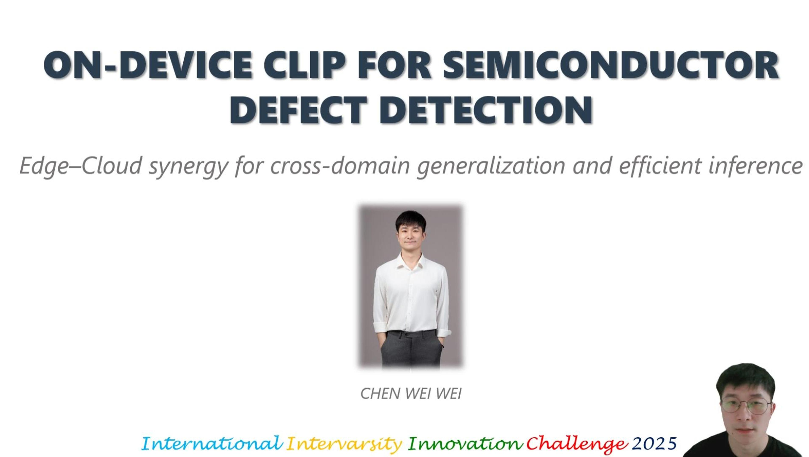

CHEN WEIWEI (Wayne) 陈炜炜
Currently, I am primarily focusing on two research fields: VLM and Effecient AI.
If you are an undergraduate or master's student interested in collaborating with me, please feel free to reach out! I will happily support you!
Currently, I am primarily focusing on two research fields: VLM and Effecient AI.
If you are an undergraduate or master's student interested in collaborating with me, please feel free to reach out! I will happily support you!
Ph.D. in Faculty of Engineering and Quantity Surveying (FEQS)
Supervisor: Prof. Leong Wai Yie
M.S. in School of Physics and Information Engineering
Supervisor: Prof. Frank Yan
B.S. in Under School of Mechanical and Energy Engineering
For the paper "Application Research on Sleeping Posture Classification Algorithm Based on a Novel Neural Network Architecture".
Awarded 3rd place in the 14th Shenzhen Workers' Technical Innovation Games & 2024 Shenzhen Skills Competition; received the honorary title of "Shenzhen Technical Expert".
Certified as an evaluator for vocational skill level recognition (Occupation: AI Trainer), issued by Shenzhen Artificial Intelligence Industry Association.
Second contributor to the project "Optimization of Key Scene Problems of Commercial Cleaning Robots", with a total funding of RMB 200,000.
Served as the lead lecturer for the provincial-level quality course "Java Application Development".
Awarded the National Senior Worker Certificate for Computer Programming.
Won 4th place in the "2022–2023 Guangdong Province Mobile Light Application Development Vocational Skills Competition".
Full-time Researcher
Sofeware Engineer
Optimizing Algorithm Performance on Xiaomi Devices.
intern
ADC Project: Research on Image Algorithm Applications in Semiconductor Display Scenarios.
2025
Organized by Einstein Research Academy. The International Virtual Innovation Challenge (IVIC) 2025 provides a global platform for academicians, researchers, and students to showcase innovative ideas contributing to the Sustainable Development Goals (SDGs).
Outside of research, I enjoy traditional Chinese calligraphy works.
📚 Check out some of my works of Chinese calligraphy.